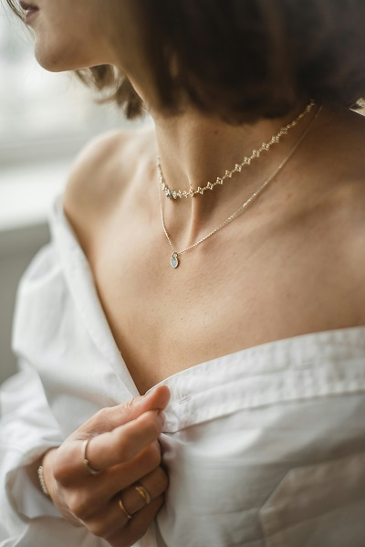

Clothing
5 Unexpected Ways to Style a White T-Shirt
Author: Ladele Simi
14th July, 2025

Ever stared at your closet full of clothes and still felt like you had nothing to wear? Your trusty white tshirt is sitting there, judging you silently for ignoring its potential. Let's be real – most of us are guilty of styling a white t-shirt the same boring way every time. But this wardrobe staple deserves better. In this guide, you'll discover five genuinely unexpected ways to style a white t-shirt that'll have your friends asking, "How did you come up with that outfit?" These aren't your typical fashion magazine suggestions. They're practical, head-turning combinations that work for real bodies and real lives. And just wait until you see the fourth styling trick – it completely transforms even the most basic $5 tee into something that looks designer-level expensive.
Elevate Your Casual Look

A. Knot It for Instant Style That plain white tee sitting in your drawer? It's basically magic waiting to happen. Grab the bottom hem and tie a simple knot at your waistline. Boom – instant shape definition and a totally different silhouette. Works amazing with high-waisted jeans or skirts to show just a hint of skin. Not into the belly exposure? No problem. Position the knot slightly to one side for an asymmetrical look that's just as effective without baring midriff. The best part? This trick works regardless of your tee's fit. Oversized shirts get an instant structure makeover, while fitted tees gain a relaxed, effortless vibe.

B. The Half-Tuck Technique The half-tuck is that styling secret that screams "I just threw this on" while actually being totally intentional. Just tuck in the front portion of your tee and leave the back hanging loose. This little move creates visual interest and dimension without trying too hard. It's perfect when you're wearing those jeans that need just a little something extra. Pro tip: Focus on tucking in just one section at the front center or slightly off to the side. The messier and more casual it looks, the more stylish it actually is. Strange but true. B. Layer Under a Slip Dress Remember when slip dresses were just for bedtime? Those days are gone. Throw your trusty white tee underneath a slip dress and suddenly you've got an outfit that works for practically any occasion. This combo gives those slinky dresses a casual edge while making your basic white tee look deliberately fashionable. The contrast between the structured cotton tee and flowing dress fabric creates a look that's both comfortable and pulled-together. Black slip dresses create the most striking contrast, but don't be afraid to experiment with patterns or bold colors too.
High-Fashion Transformations
A. Accessorize with Statement Jewelry Your basic white tee isn't just weekend wear anymore. Grab that chunky necklace or those oversized earrings you save for special occasions and pair them with your plain white t-shirt. The contrast works magic. Bold jewelry instantly elevates your look from "just rolled out of bed" to "I actually planned this outfit." Try layering multiple necklaces of varying lengths or stacking bracelets for a maximalist approach. The white backdrop makes colorful pieces pop even more. That vintage brooch from your grandmother? Pin it to your t-shirt for an unexpected twist. A. Belt It to Create Shape That boxy white tee can actually give you a killer silhouette with one simple trick - add a belt. Tuck your tshirt into high-waisted pants or a skirt, then cinch with a statement belt. Suddenly, that shapeless shirt is showing off your waistline. Wide belts work best for creating dramatic hourglass shapes, while skinny belts offer subtle definition. For extra edge, try a corset belt over your white tee - it's runway-worthy in seconds. B. Pair with Unexpected Textures The magic happens when you mix textures. Your cotton t-shirt with a sequin skirt? Absolutely. Leather pants? Game-changing. Velvet blazer? Chef's kiss. The simplicity of a white tee creates the perfect canvas for experimenting with rich fabrics. Try pairing with: Silk midi skirts Tweed shorts Patent leather pants Jacquard trousers The juxtaposition of casual cotton against luxe textures creates that enviable high-low mix the fashion crowd loves. C. Layer with Sheer Pieces Think beyond just wearing your white t-shirt under things. Try layering a sheer blouse, mesh top, or organza button-down over your white tee. This instantly creates depth and visual interest. A transparent black mesh turtleneck over a white tee gives major editorial vibes. Or try a sheer embellished overlay for evening events - your basic white tee suddenly becomes cocktail-appropriate. E. Add a Structured Blazer Nothing transforms a white t-shirt faster than sharp tailoring. A well-cut blazer instantly adds polish and purpose to your look. The structure creates gorgeous contrast against the casual softness of your tee. Oversized boyfriend blazers create an effortless cool-girl vibe, while cropped versions highlight your waistline. For maximum impact, try unexpected colors or patterns - a hot pink blazer or houndstooth check makes that simple white tee look intentional and fashion-forward.
Seasonal Styling Tricks

Summer Beachwear Conversion That plain white tee hiding in your drawer? It's secretly a beach MVP. Knot it at the waist over a swimsuit for instant poolside chic. The best part? No need for a cover-up – your trusty tee does double duty. Try this: Pair with high-waisted denim shorts and slide sandals for a quick transition from beach to boardwalk bar. Or tuck it into a flowy midi skirt when the evening breeze kicks in. Got a men's white tee? Even better. The oversized fit makes for the perfect beach dress when belted. Just add big sunglasses and you're giving off major vacation vibes with minimal effort. Fall Layering with Cardigans Fall's the season where your white tee truly shines. Start with your tee as the foundation, then add a chunky cardigan in autumn tones – think rust, olive, or mustard. The trick here? Play with proportions. A fitted white tee balances an oversized cardigan perfectly. Try a half-tuck to keep things from looking sloppy. For chillier days, layer your white tee under a flannel shirt left unbuttoned, then top with a leather jacket. Instant cool-girl look without trying too hard. Winter White-on-White Looks Forget that "no white after Labor Day" nonsense. Winter whites are sophisticated and unexpected. Start with your crisp white tee, then add: Cream-colored wide-leg trousers An ivory cable-knit sweater (tee underneath for layering) White leather boots or sneakers The secret to pulling this off? Mix textures. Combine your cotton tee with wool, cashmere, leather, and denim – all in various shades of white. The subtle variations create depth while the consistent color palette looks intentional and polished. For extra warmth, add a white puffer vest or coat. You'll be the coolest snowflake on the block.

Office-Ready White Tee Looks
A. Pair with Tailored Trousers Think your white tee is too casual for work? Think again. Pair it with some well-fitted, tailored trousers and you've got instant polish. The trick is finding that perfect-fitting white t-shirt—not too baggy, not too tight. Tuck it in (try a French tuck for that effortless vibe) and add a slim belt to define your waist. This combo works with any trouser color—navy, black, camel, or even bold hues like burgundy or forest green. The white tee acts as a blank canvas, letting your statement pants do the talking. A. Layer Under a Pinstripe Suit Breaking news: suits aren't just for button-ups anymore. A crisp white tee under a pinstripe suit creates that perfect balance between professional and approachable. The key? Quality matters. Opt for a thicker cotton tee that won't show what's underneath. Keep the neckline simple—crew or v-neck both work beautifully. Leave the suit jacket unbuttoned for a relaxed yet put-together look that says "I'm confident enough to bend the rules." B. Add a Silk Scarf for Elegance A silk scarf is the secret weapon for transforming your basic white tee into executive-ready attire. Drape it around your neck, tie it loosely, or even wrap it at your wrist for a pop of color. Patterns make all the difference here—geometric prints read modern, while florals add femininity. This tiny accessory elevates your white tee instantly, showing attention to detail that resonates in professional settings. D. Monochromatic Professional Styling White-on-white might seem risky, but it's actually a power move. Pair your white tee with white trousers or a white skirt, then add a structured white blazer. The varying textures and shades of white create depth while projecting confidence and clarity. This look screams sophistication when you add the right accessories—think metallic jewelry, a colored belt, or statement shoes. The best part? You'll never look overdressed or underdressed—this outfit adapts to whatever your workday throws at you.

Statement-Making Evening Wear
A. Tuck into a Sequin Skirt Think your white tee can't hang with the fancy stuff? Think again. A crisp white t-shirt tucked into a sequin skirt creates that perfect high-low mix that looks effortlessly cool. The contrast is what makes this combo work—your casual tee tames the drama of all those sparkles. Try a midi-length sequin skirt in silver or gold for maximum impact. The trick is keeping your t-shirt simple and well-fitted. No logos, no graphics—just clean white cotton against that sea of shimmer. A. Layer Under a Sheer Top Ready for a night out but still want that comfort factor? Layer your white tee under a sheer blouse or top. This instantly creates depth and keeps things appropriate while still looking fashion-forward. A black sheer organza top over your white tee paired with slim black pants? That's a look that works from gallery openings to cocktail parties. The white tee becomes your canvas, allowing the transparent layer to take center stage without revealing too much. C. Pair with Leather for Edge Nothing transforms a basic white t-shirt faster than leather. Slip into a black leather pencil skirt or highwaisted leather pants, and suddenly your humble tee has attitude. The contrast between soft cotton and tough leather creates tension in your outfit—that's what makes it interesting. Tuck the front of your tee in (the French tuck) and leave the back loose for that "I just threw this on" vibe that actually took careful planning. D. Dress Up with Metallic Accessories Sometimes the supporting players make the star shine brighter. Stack bold metallic jewelry—think chunky gold chains or statement silver cuffs—against the blank canvas of your white tee. A metallic belt can define your waist and elevate your whole look. Even metallic heels or a gleaming clutch can transform your simple white t-shirt into evening-appropriate attire. Remember—accessories are the difference between "I ran out of clean clothes" and "I planned this minimal chic look." The humble white t-shirt isn't just a casual staple—it's a versatile fashion powerhouse hiding in plain sight. From creating office-appropriate ensembles to crafting high-fashion statements, this foundational piece works harder than we give it credit for. Whether you're layering it under blazers for work, knotting it with skirts for summer outings, or dressing it up with statement jewelry for evening events, the styling possibilities extend far beyond basic weekend wear. Next time you reach for your favorite white tee, remember its transformative potential. Experiment with tucking techniques, unexpected pairings, and strategic accessories to maximize this wardrobe essential throughout every season. With these five unexpected styling approaches, your white t-shirt can become the most hardworking and surprising fashion piece you own.